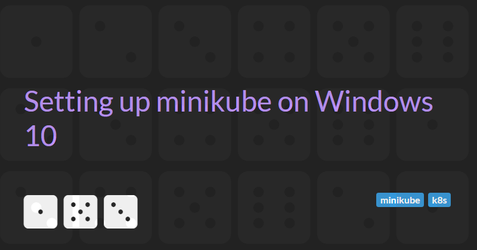

Jun 26, 2019
Setting up minikube on Windows 10
These instructions will help you set up minikube on a Windows 10 Home edition.
These instructions will also work with Windows 10 Professional and Enterprise editions but you must first disable Hyper-V support (via "Programs and Features" in Control Panel).
- You may need to enable virtualization (this usually involves making some changes to the BIOS). To check whether this step is required you can use tools like Speccy.
- Install chocolaty - this will simplify the rest of the install process.
- Open an admin Command console or PowerShell console. Run
choco install virtualboxin the console to install the Virtual Box type 2 hypervisor required to run Docker. - Run
choco install docker-toolboxto install a legacy docker, docker-machine, docker-compose, etc. This is required as the newer docker desktop is only supported on Windows 10 64bit: Pro, Enterprise or Education (Build 15063 or later). - Double click on the
Docker Quickstart Terminalshortcut (this should appear on the Desktop after docker toolbox is installed). This will setup and configure docker on the local machine - Run
choco install minikubeto install minikube. - Run
minikube startto start minikube and double-check your configuration - this may take some time on the first run. - Ensure that minikube is running correctly and
kubectlhas been configured to talk to minikube by running the following commands:minikube status,kubectl config view, andkubectl cluster-info.